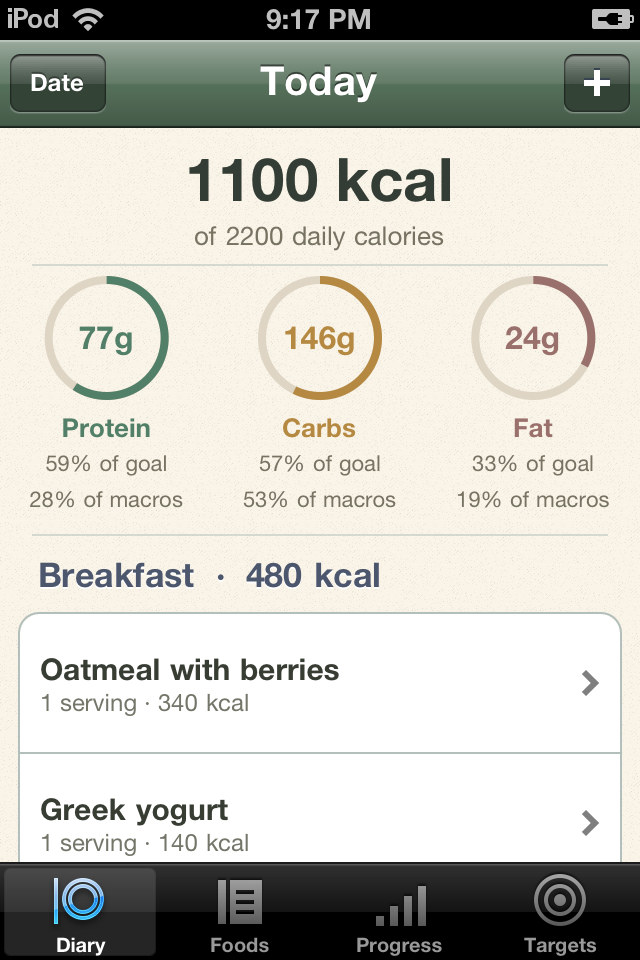
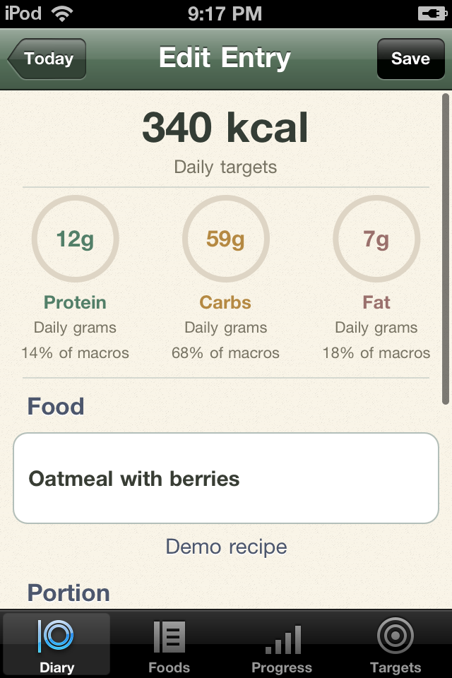
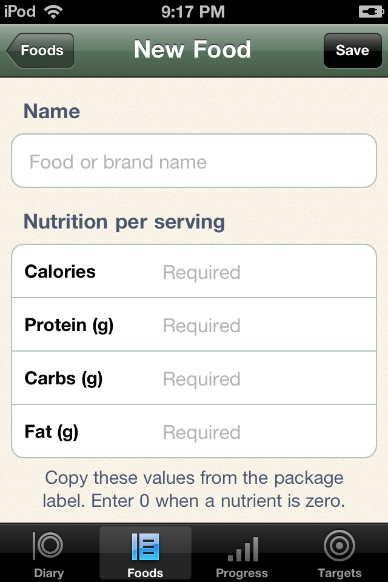
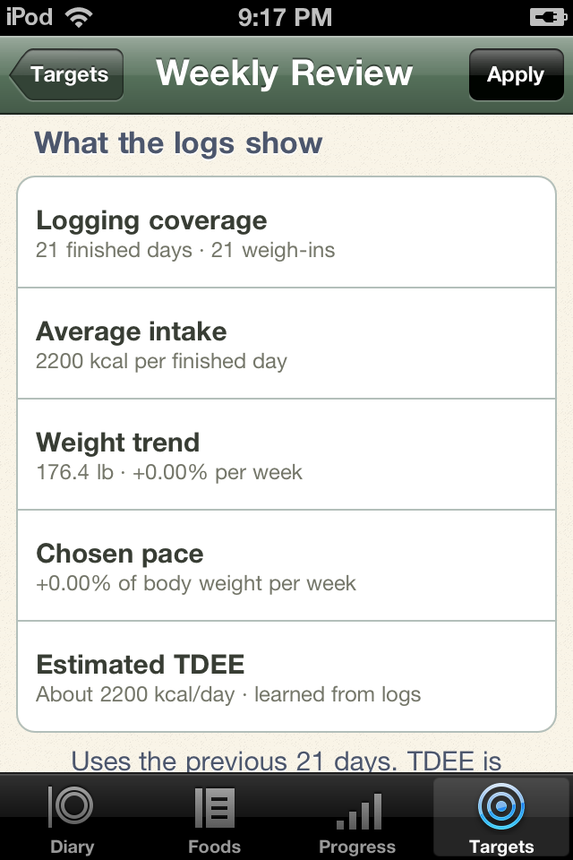
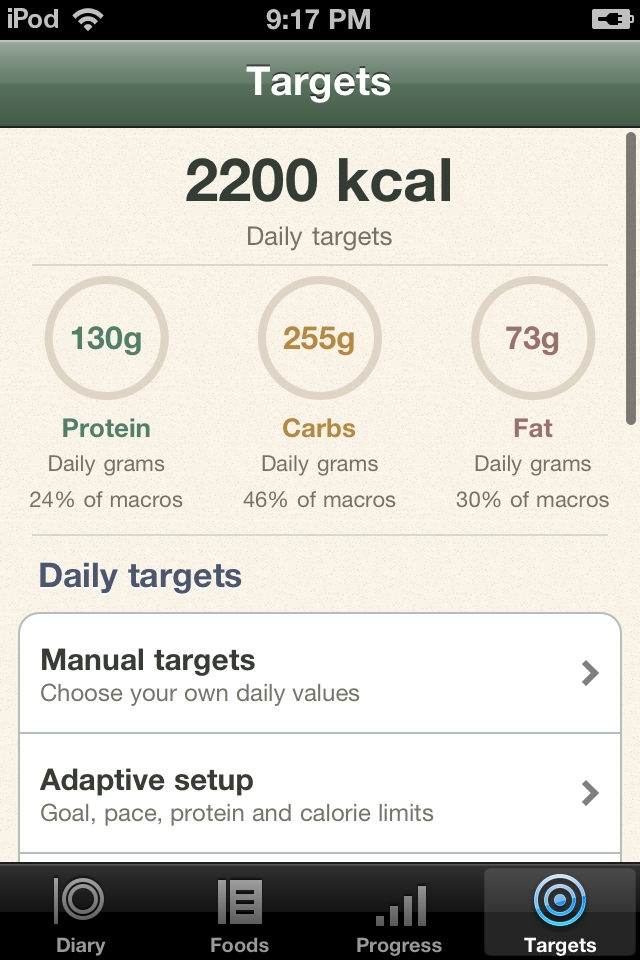

Search the built-in USDA catalog without Wi-Fi. Pick a household portion or enter an amount in grams or ounces. Calories, protein, carbs and fat follow along. Daily rings show progress toward each macro target and the share of consumed macro calories.
Your recent foods stay close by. Breakfast, lunch, dinner and snacks each have a place in the diary.

Add a packaged food from its label, or build a recipe from ingredients and the number of servings it makes. Save it once and log it again whenever you like.
Tap a diary entry to adjust the portion. Copy yesterday's foods after reviewing a confirmation. Later recipe edits leave past logs as they were.

Choose your starting targets and a goal to maintain, gain or lose slowly. Finished food logs and a multi-week weight trend inform small calorie adjustments, with your chosen protein target held steady.
Choose automatic weekly updates or review each proposal yourself. Meals estimates daily expenditure from finished food logs and your weight trend, then adjusts calorie and macro targets by at most 100 calories per week. Every applied update is saved in history.
Illustrative test data shown. Meals uses a simple energy-balance estimate, not MacroFactor’s proprietary algorithm or a measured metabolism test.

Use local Sets weigh-ins or log weight in Meals, and mark a diary day finished once all food and drinks are entered. The first adaptive review needs roughly three weeks: 18 finished days and at least nine weigh-ins, spread across the last 21 days.
Incomplete food logs are kept, but left out of the calculation. A sparse or unsettled trend waits for more data. Review your recent logging and seven-day progress whenever you like.
No account, subscription, API key or running Mac. Food search, recipes, weight logs and adaptive reviews all work offline. Your diary stays on the device.
Back it up through iTunes File Sharing. Updates preserve your entries, and Meals makes a database backup before upgrading an older diary.